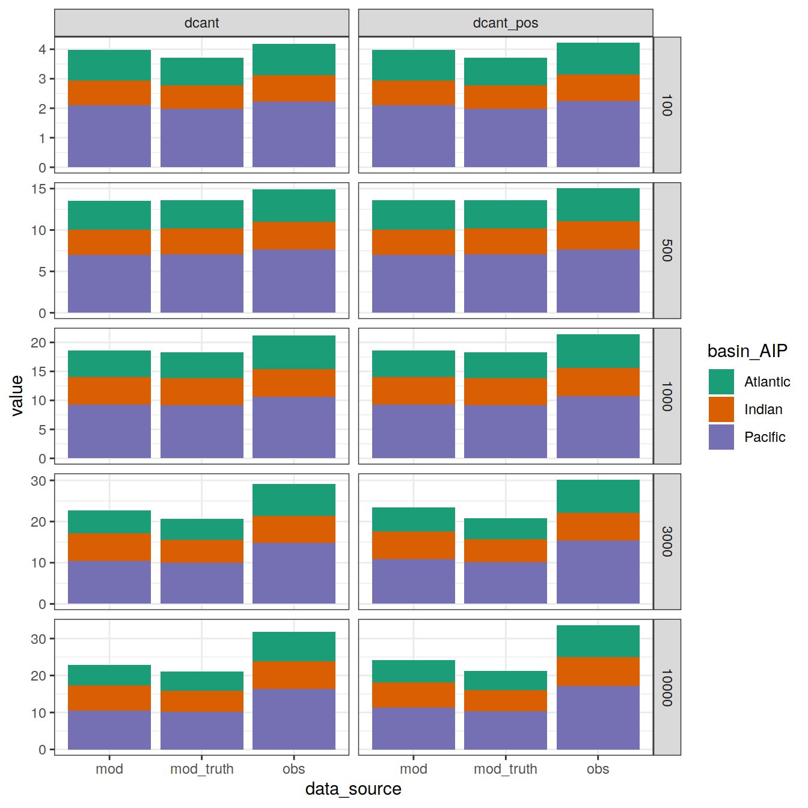
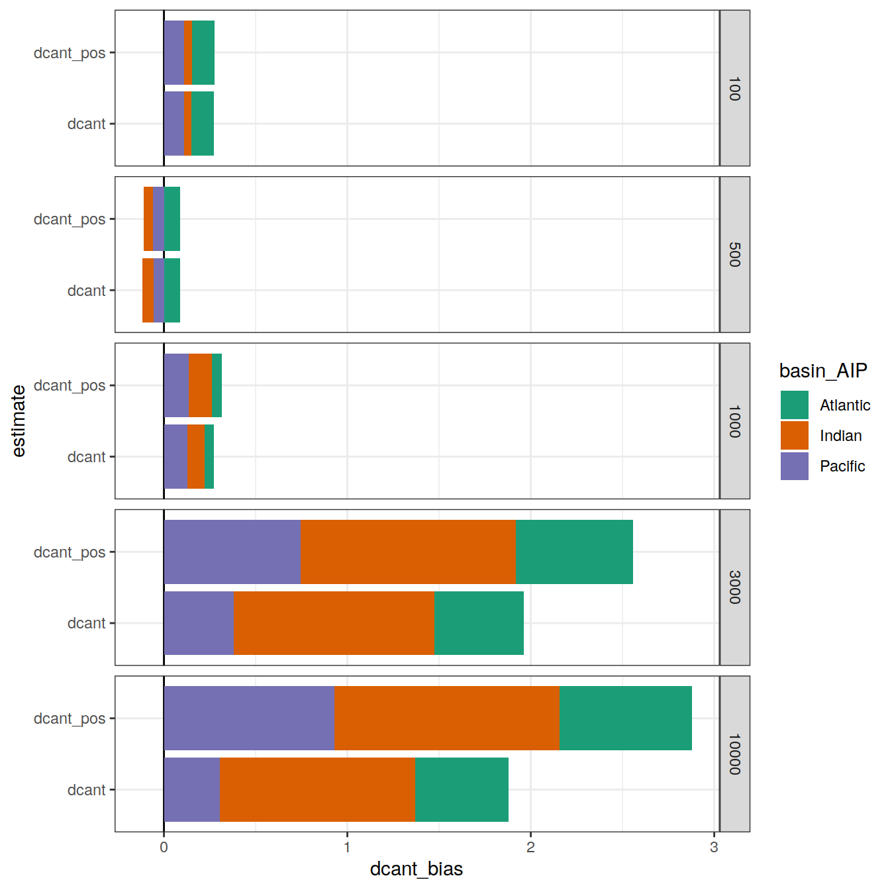

Analysis of cant estimates
Jens Daniel Müller
20 May, 2021
Last updated: 2021-05-20
Checks: 7 0
Knit directory: emlr_obs_v_XXX/
This reproducible R Markdown analysis was created with workflowr (version 1.6.2). The Checks tab describes the reproducibility checks that were applied when the results were created. The Past versions tab lists the development history.
Great! Since the R Markdown file has been committed to the Git repository, you know the exact version of the code that produced these results.
Great job! The global environment was empty. Objects defined in the global environment can affect the analysis in your R Markdown file in unknown ways. For reproduciblity it’s best to always run the code in an empty environment.
The command set.seed(20200707) was run prior to running the code in the R Markdown file. Setting a seed ensures that any results that rely on randomness, e.g. subsampling or permutations, are reproducible.
Great job! Recording the operating system, R version, and package versions is critical for reproducibility.
Nice! There were no cached chunks for this analysis, so you can be confident that you successfully produced the results during this run.
Great job! Using relative paths to the files within your workflowr project makes it easier to run your code on other machines.
Great! You are using Git for version control. Tracking code development and connecting the code version to the results is critical for reproducibility.
The results in this page were generated with repository version 8adf952. See the Past versions tab to see a history of the changes made to the R Markdown and HTML files.
Note that you need to be careful to ensure that all relevant files for the analysis have been committed to Git prior to generating the results (you can use wflow_publish or wflow_git_commit). workflowr only checks the R Markdown file, but you know if there are other scripts or data files that it depends on. Below is the status of the Git repository when the results were generated:
Ignored files:
Ignored: .Rhistory
Ignored: .Rproj.user/
Unstaged changes:
Modified: code/Workflowr_project_managment.R
Modified: data/auxillary/params_local.rds
Note that any generated files, e.g. HTML, png, CSS, etc., are not included in this status report because it is ok for generated content to have uncommitted changes.
These are the previous versions of the repository in which changes were made to the R Markdown (analysis/analysis_budgets.Rmd) and HTML (docs/analysis_budgets.html) files. If you’ve configured a remote Git repository (see ?wflow_git_remote), click on the hyperlinks in the table below to view the files as they were in that past version.
| File | Version | Author | Date | Message |
|---|---|---|---|---|
| html | 62bd574 | jens-daniel-mueller | 2021-05-20 | Build site. |
| html | 7c56c39 | jens-daniel-mueller | 2021-05-19 | Build site. |
| html | 0de759e | jens-daniel-mueller | 2021-05-13 | Build site. |
| html | 52e7583 | jens-daniel-mueller | 2021-05-12 | Build site. |
| html | 969e631 | jens-daniel-mueller | 2021-05-12 | Build site. |
| html | d2a83bc | jens-daniel-mueller | 2021-04-16 | Build site. |
| html | c0a47df | jens-daniel-mueller | 2021-04-16 | Build site. |
| html | 50290e8 | jens-daniel-mueller | 2021-04-16 | overlapping eras |
| html | a00ec94 | jens-daniel-mueller | 2021-04-16 | Build site. |
| Rmd | 82df560 | jens-daniel-mueller | 2021-04-16 | corrected tref assignment |
| html | b6fe355 | jens-daniel-mueller | 2021-04-16 | Build site. |
| html | 81b7c6d | jens-daniel-mueller | 2021-04-16 | Build site. |
| html | 0a6099c | jens-daniel-mueller | 2021-04-16 | Build site. |
| html | ddec5b7 | jens-daniel-mueller | 2021-04-15 | Build site. |
| html | 29edae5 | jens-daniel-mueller | 2021-04-14 | Build site. |
| html | 099d566 | jens-daniel-mueller | 2021-04-14 | Build site. |
| html | bb44686 | jens-daniel-mueller | 2021-04-14 | Build site. |
| html | bf40480 | jens-daniel-mueller | 2021-04-13 | Build site. |
| html | 9f31fe3 | jens-daniel-mueller | 2021-04-13 | Build site. |
| html | 6eecb54 | jens-daniel-mueller | 2021-04-13 | Build site. |
| Rmd | b9c18c8 | jens-daniel-mueller | 2021-04-13 | included model data |
| html | f6ed7de | jens-daniel-mueller | 2021-04-13 | Build site. |
| Rmd | 3efd03e | jens-daniel-mueller | 2021-04-13 | included model data |
| html | c98be84 | jens-daniel-mueller | 2021-04-13 | Build site. |
| html | 338dd3c | jens-daniel-mueller | 2021-04-09 | Build site. |
| html | a79ca2c | jens-daniel-mueller | 2021-04-09 | included model data |
| html | 7831fd3 | jens-daniel-mueller | 2021-04-09 | Build site. |
| html | 20b26d4 | jens-daniel-mueller | 2021-04-08 | Build site. |
| html | c0895f8 | jens-daniel-mueller | 2021-04-07 | Build site. |
| html | 156d5b7 | jens-daniel-mueller | 2021-04-07 | Build site. |
| html | d21a452 | jens-daniel-mueller | 2021-04-07 | Build site. |
| Rmd | 296db5c | jens-daniel-mueller | 2021-04-07 | included model data |
1 Data sources
Cant estimates from this sensitivity case:
- Mean and SD per grid cell (lat, lon, depth)
- Zonal mean and SD (basin, lat, depth)
- Inventories (lat, lon)
cant_inv <-
read_csv(paste(path_version_data,
"cant_inv.csv",
sep = ""))
cant_inv_mod_truth <-
read_csv(paste(path_version_data,
"cant_inv_mod_truth.csv",
sep = ""))
cant_inv <- bind_rows(cant_inv, cant_inv_mod_truth)
tref <-
read_csv(paste(path_version_data,
"tref.csv",
sep = ""))2 Time periods
tref# A tibble: 2 x 2
era median_year
<chr> <dbl>
1 2000-2009 2006
2 2010-2019 2014duration <- sort(tref$median_year)[2] - sort(tref$median_year)[1]
duration[1] 83 Cant budgets
Global Cant inventories were estimated in units of Pg C. Please note that here we added Cant (all vs postitive only) values and do not apply additional corrections for areas not covered.
cant_inv_budget <- cant_inv %>%
mutate(surface_area = earth_surf(lat, lon),
cant_inv_grid = cant_inv*surface_area,
cant_pos_inv_grid = cant_pos_inv*surface_area) %>%
group_by(basin_AIP, data_source, inv_depth) %>%
summarise(cant_total = sum(cant_inv_grid)*12*1e-15,
cant_total = round(cant_total,1),
cant_pos_total = sum(cant_pos_inv_grid)*12*1e-15,
cant_pos_total = round(cant_pos_total,1)) %>%
ungroup()
cant_inv_budget %>%
group_by(data_source, inv_depth) %>%
summarise(cant_total = sum(cant_total),
cant_total = round(cant_total,1),
cant_pos_total = sum(cant_pos_total),
cant_pos_total = round(cant_pos_total,1),
cant_total_rate = cant_total / duration,
cant_pos_total_rate = cant_pos_total / duration) %>%
ungroup()# A tibble: 15 x 6
data_source inv_depth cant_total cant_pos_total cant_total_rate
<chr> <dbl> <dbl> <dbl> <dbl>
1 mod 100 3.1 3.1 0.388
2 mod 500 10.4 10.4 1.3
3 mod 1000 13.9 13.9 1.74
4 mod 3000 16.8 17.1 2.1
5 mod 10000 16.9 17.5 2.11
6 mod_truth 100 2.9 2.9 0.362
7 mod_truth 500 10.8 10.8 1.35
8 mod_truth 1000 14.8 14.8 1.85
9 mod_truth 3000 16.6 16.8 2.08
10 mod_truth 10000 17 17.1 2.12
11 obs 100 3.3 3.3 0.412
12 obs 500 11.6 11.6 1.45
13 obs 1000 16.4 16.4 2.05
14 obs 3000 22.9 23.1 2.86
15 obs 10000 26.2 26.5 3.28
# … with 1 more variable: cant_pos_total_rate <dbl>3.1 Standard depth
Results integrated over the upper 3000 m
cant_inv_budget %>%
filter(inv_depth == params_global$inventory_depth_standard) %>%
pivot_longer(cols = c(cant_total, cant_pos_total), names_to = "estimate", values_to = "cant_total") %>%
ggplot(aes(data_source, cant_total, fill = basin_AIP)) +
scale_fill_brewer(palette = "Dark2") +
geom_col() +
facet_wrap(~ estimate)
| Version | Author | Date |
|---|---|---|
| 62bd574 | jens-daniel-mueller | 2021-05-20 |
| 7c56c39 | jens-daniel-mueller | 2021-05-19 |
| 52e7583 | jens-daniel-mueller | 2021-05-12 |
| 969e631 | jens-daniel-mueller | 2021-05-12 |
| d2a83bc | jens-daniel-mueller | 2021-04-16 |
| c0a47df | jens-daniel-mueller | 2021-04-16 |
| 50290e8 | jens-daniel-mueller | 2021-04-16 |
| a00ec94 | jens-daniel-mueller | 2021-04-16 |
| b6fe355 | jens-daniel-mueller | 2021-04-16 |
| 81b7c6d | jens-daniel-mueller | 2021-04-16 |
| 0a6099c | jens-daniel-mueller | 2021-04-16 |
| ddec5b7 | jens-daniel-mueller | 2021-04-15 |
| 29edae5 | jens-daniel-mueller | 2021-04-14 |
| 099d566 | jens-daniel-mueller | 2021-04-14 |
| bb44686 | jens-daniel-mueller | 2021-04-14 |
| bf40480 | jens-daniel-mueller | 2021-04-13 |
| 9f31fe3 | jens-daniel-mueller | 2021-04-13 |
| f6ed7de | jens-daniel-mueller | 2021-04-13 |
cant_inv_budget %>%
filter(inv_depth == params_global$inventory_depth_standard) %>%
gt(rowname_col = "basin_AIP",
groupname_col = c("data_source", "inv_depth"),
row_group.sep = " | Depth: ") %>%
summary_rows(
groups = TRUE,
fns = list(total = "sum")
)| cant_total | cant_pos_total | |
|---|---|---|
| mod | Depth: 3000 | ||
| Atlantic | 4.5 | 4.6 |
| Indian | 4.2 | 4.3 |
| Pacific | 8.1 | 8.2 |
| total | 16.80 | 17.10 |
| mod_truth | Depth: 3000 | ||
| Atlantic | 4.1 | 4.2 |
| Indian | 4.5 | 4.5 |
| Pacific | 8.0 | 8.1 |
| total | 16.60 | 16.80 |
| obs | Depth: 3000 | ||
| Atlantic | 7.3 | 7.4 |
| Indian | 4.0 | 4.1 |
| Pacific | 11.6 | 11.6 |
| total | 22.90 | 23.10 |
cant_inv_bias <- cant_inv_budget %>%
filter(data_source %in% c("mod", "mod_truth")) %>%
select(data_source, basin_AIP, inv_depth, cant_pos_total, cant_total) %>%
pivot_longer(cols = c(cant_total, cant_pos_total), names_to = "estimate", values_to = "cant_total") %>%
pivot_wider(names_from = data_source,
values_from = cant_total) %>%
mutate(cant_bias = mod - mod_truth,
cant_bias_rel = cant_bias / mod_truth)
cant_inv_bias %>%
filter(inv_depth == params_global$inventory_depth_standard) %>%
ggplot(aes(cant_bias, estimate, fill=basin_AIP)) +
geom_vline(xintercept = 0) +
geom_col() +
scale_fill_brewer(palette = "Dark2")
| Version | Author | Date |
|---|---|---|
| 62bd574 | jens-daniel-mueller | 2021-05-20 |
| 7c56c39 | jens-daniel-mueller | 2021-05-19 |
| 52e7583 | jens-daniel-mueller | 2021-05-12 |
| 969e631 | jens-daniel-mueller | 2021-05-12 |
| d2a83bc | jens-daniel-mueller | 2021-04-16 |
| c0a47df | jens-daniel-mueller | 2021-04-16 |
| 50290e8 | jens-daniel-mueller | 2021-04-16 |
| a00ec94 | jens-daniel-mueller | 2021-04-16 |
| b6fe355 | jens-daniel-mueller | 2021-04-16 |
| 81b7c6d | jens-daniel-mueller | 2021-04-16 |
| 0a6099c | jens-daniel-mueller | 2021-04-16 |
| ddec5b7 | jens-daniel-mueller | 2021-04-15 |
| 29edae5 | jens-daniel-mueller | 2021-04-14 |
| 099d566 | jens-daniel-mueller | 2021-04-14 |
| bb44686 | jens-daniel-mueller | 2021-04-14 |
| bf40480 | jens-daniel-mueller | 2021-04-13 |
| 9f31fe3 | jens-daniel-mueller | 2021-04-13 |
| 6eecb54 | jens-daniel-mueller | 2021-04-13 |
3.2 Other depths
Results integrated over the upper 100, 500, 1000, 3000, 10^{4} m
cant_inv_budget %>%
filter(inv_depth != params_global$inventory_depth_standard) %>%
pivot_longer(cols = c(cant_total, cant_pos_total), names_to = "estimate", values_to = "cant_total") %>%
ggplot(aes(data_source, cant_total, fill = basin_AIP)) +
scale_fill_brewer(palette = "Dark2") +
geom_col() +
facet_grid(inv_depth ~ estimate, scales = "free_y")
| Version | Author | Date |
|---|---|---|
| 62bd574 | jens-daniel-mueller | 2021-05-20 |
| 7c56c39 | jens-daniel-mueller | 2021-05-19 |
| 52e7583 | jens-daniel-mueller | 2021-05-12 |
| 969e631 | jens-daniel-mueller | 2021-05-12 |
| d2a83bc | jens-daniel-mueller | 2021-04-16 |
| c0a47df | jens-daniel-mueller | 2021-04-16 |
| 50290e8 | jens-daniel-mueller | 2021-04-16 |
| a00ec94 | jens-daniel-mueller | 2021-04-16 |
| b6fe355 | jens-daniel-mueller | 2021-04-16 |
| 81b7c6d | jens-daniel-mueller | 2021-04-16 |
| 0a6099c | jens-daniel-mueller | 2021-04-16 |
| ddec5b7 | jens-daniel-mueller | 2021-04-15 |
| 29edae5 | jens-daniel-mueller | 2021-04-14 |
| 099d566 | jens-daniel-mueller | 2021-04-14 |
| bb44686 | jens-daniel-mueller | 2021-04-14 |
| bf40480 | jens-daniel-mueller | 2021-04-13 |
| 9f31fe3 | jens-daniel-mueller | 2021-04-13 |
| f6ed7de | jens-daniel-mueller | 2021-04-13 |
cant_inv_budget %>%
filter(inv_depth != params_global$inventory_depth_standard) %>%
gt(rowname_col = "basin_AIP",
groupname_col = c("data_source", "inv_depth"),
row_group.sep = " | Depth: ") %>%
summary_rows(
groups = TRUE,
fns = list(total = "sum")
)| cant_total | cant_pos_total | |
|---|---|---|
| mod | Depth: 100 | ||
| Atlantic | 0.9 | 0.9 |
| Indian | 0.6 | 0.6 |
| Pacific | 1.6 | 1.6 |
| total | 3.10 | 3.10 |
| mod | Depth: 500 | ||
| Atlantic | 2.7 | 2.7 |
| Indian | 2.3 | 2.3 |
| Pacific | 5.4 | 5.4 |
| total | 10.40 | 10.40 |
| mod | Depth: 1000 | ||
| Atlantic | 3.6 | 3.6 |
| Indian | 3.4 | 3.4 |
| Pacific | 6.9 | 6.9 |
| total | 13.90 | 13.90 |
| mod | Depth: 10000 | ||
| Atlantic | 4.5 | 4.7 |
| Indian | 4.1 | 4.3 |
| Pacific | 8.3 | 8.5 |
| total | 16.90 | 17.50 |
| mod_truth | Depth: 100 | ||
| Atlantic | 0.7 | 0.7 |
| Indian | 0.6 | 0.6 |
| Pacific | 1.6 | 1.6 |
| total | 2.90 | 2.90 |
| mod_truth | Depth: 500 | ||
| Atlantic | 2.7 | 2.7 |
| Indian | 2.5 | 2.5 |
| Pacific | 5.6 | 5.6 |
| total | 10.80 | 10.80 |
| mod_truth | Depth: 1000 | ||
| Atlantic | 3.7 | 3.7 |
| Indian | 3.8 | 3.8 |
| Pacific | 7.3 | 7.3 |
| total | 14.80 | 14.80 |
| mod_truth | Depth: 10000 | ||
| Atlantic | 4.2 | 4.2 |
| Indian | 4.6 | 4.6 |
| Pacific | 8.2 | 8.3 |
| total | 17.00 | 17.10 |
| obs | Depth: 100 | ||
| Atlantic | 0.8 | 0.8 |
| Indian | 0.7 | 0.7 |
| Pacific | 1.8 | 1.8 |
| total | 3.30 | 3.30 |
| obs | Depth: 500 | ||
| Atlantic | 3.1 | 3.1 |
| Indian | 2.4 | 2.4 |
| Pacific | 6.1 | 6.1 |
| total | 11.60 | 11.60 |
| obs | Depth: 1000 | ||
| Atlantic | 4.8 | 4.8 |
| Indian | 3.4 | 3.4 |
| Pacific | 8.2 | 8.2 |
| total | 16.40 | 16.40 |
| obs | Depth: 10000 | ||
| Atlantic | 8.3 | 8.5 |
| Indian | 4.3 | 4.4 |
| Pacific | 13.6 | 13.6 |
| total | 26.20 | 26.50 |
rm(cant_inv_budget)
cant_inv_bias %>%
filter(inv_depth != params_global$inventory_depth_standard) %>%
ggplot(aes(cant_bias, estimate, fill=basin_AIP)) +
geom_vline(xintercept = 0) +
geom_col() +
scale_fill_brewer(palette = "Dark2") +
facet_wrap(~ inv_depth)
| Version | Author | Date |
|---|---|---|
| 62bd574 | jens-daniel-mueller | 2021-05-20 |
| 7c56c39 | jens-daniel-mueller | 2021-05-19 |
| 52e7583 | jens-daniel-mueller | 2021-05-12 |
| 969e631 | jens-daniel-mueller | 2021-05-12 |
| d2a83bc | jens-daniel-mueller | 2021-04-16 |
| c0a47df | jens-daniel-mueller | 2021-04-16 |
| 50290e8 | jens-daniel-mueller | 2021-04-16 |
| a00ec94 | jens-daniel-mueller | 2021-04-16 |
| b6fe355 | jens-daniel-mueller | 2021-04-16 |
| 81b7c6d | jens-daniel-mueller | 2021-04-16 |
| 0a6099c | jens-daniel-mueller | 2021-04-16 |
| ddec5b7 | jens-daniel-mueller | 2021-04-15 |
| 29edae5 | jens-daniel-mueller | 2021-04-14 |
| 099d566 | jens-daniel-mueller | 2021-04-14 |
| bb44686 | jens-daniel-mueller | 2021-04-14 |
| bf40480 | jens-daniel-mueller | 2021-04-13 |
| 9f31fe3 | jens-daniel-mueller | 2021-04-13 |
| 6eecb54 | jens-daniel-mueller | 2021-04-13 |
sessionInfo()R version 4.0.3 (2020-10-10)
Platform: x86_64-pc-linux-gnu (64-bit)
Running under: openSUSE Leap 15.2
Matrix products: default
BLAS: /usr/local/R-4.0.3/lib64/R/lib/libRblas.so
LAPACK: /usr/local/R-4.0.3/lib64/R/lib/libRlapack.so
locale:
[1] LC_CTYPE=en_US.UTF-8 LC_NUMERIC=C
[3] LC_TIME=en_US.UTF-8 LC_COLLATE=en_US.UTF-8
[5] LC_MONETARY=en_US.UTF-8 LC_MESSAGES=en_US.UTF-8
[7] LC_PAPER=en_US.UTF-8 LC_NAME=C
[9] LC_ADDRESS=C LC_TELEPHONE=C
[11] LC_MEASUREMENT=en_US.UTF-8 LC_IDENTIFICATION=C
attached base packages:
[1] stats graphics grDevices utils datasets methods base
other attached packages:
[1] gt_0.2.2 kableExtra_1.3.1 marelac_2.1.10 shape_1.4.5
[5] scales_1.1.1 metR_0.9.0 scico_1.2.0 patchwork_1.1.1
[9] collapse_1.5.0 forcats_0.5.0 stringr_1.4.0 dplyr_1.0.5
[13] purrr_0.3.4 readr_1.4.0 tidyr_1.1.2 tibble_3.0.4
[17] ggplot2_3.3.3 tidyverse_1.3.0 workflowr_1.6.2
loaded via a namespace (and not attached):
[1] fs_1.5.0 lubridate_1.7.9 gsw_1.0-5
[4] RColorBrewer_1.1-2 webshot_0.5.2 httr_1.4.2
[7] rprojroot_2.0.2 tools_4.0.3 backports_1.1.10
[10] utf8_1.1.4 R6_2.5.0 DBI_1.1.0
[13] colorspace_1.4-1 withr_2.3.0 tidyselect_1.1.0
[16] compiler_4.0.3 git2r_0.27.1 cli_2.1.0
[19] rvest_0.3.6 xml2_1.3.2 sass_0.2.0
[22] labeling_0.4.2 checkmate_2.0.0 digest_0.6.27
[25] rmarkdown_2.5 oce_1.2-0 pkgconfig_2.0.3
[28] htmltools_0.5.0 dbplyr_1.4.4 rlang_0.4.10
[31] readxl_1.3.1 rstudioapi_0.13 farver_2.0.3
[34] generics_0.0.2 jsonlite_1.7.1 magrittr_1.5
[37] Matrix_1.2-18 Rcpp_1.0.5 munsell_0.5.0
[40] fansi_0.4.1 lifecycle_1.0.0 stringi_1.5.3
[43] whisker_0.4 yaml_2.2.1 grid_4.0.3
[46] blob_1.2.1 parallel_4.0.3 promises_1.1.1
[49] crayon_1.3.4 lattice_0.20-41 haven_2.3.1
[52] hms_0.5.3 seacarb_3.2.14 knitr_1.30
[55] pillar_1.4.7 reprex_0.3.0 glue_1.4.2
[58] evaluate_0.14 RcppArmadillo_0.10.1.2.0 data.table_1.13.2
[61] modelr_0.1.8 vctrs_0.3.5 httpuv_1.5.4
[64] testthat_2.3.2 cellranger_1.1.0 gtable_0.3.0
[67] assertthat_0.2.1 xfun_0.18 broom_0.7.5
[70] RcppEigen_0.3.3.7.0 later_1.1.0.1 viridisLite_0.3.0
[73] ellipsis_0.3.1 here_0.1